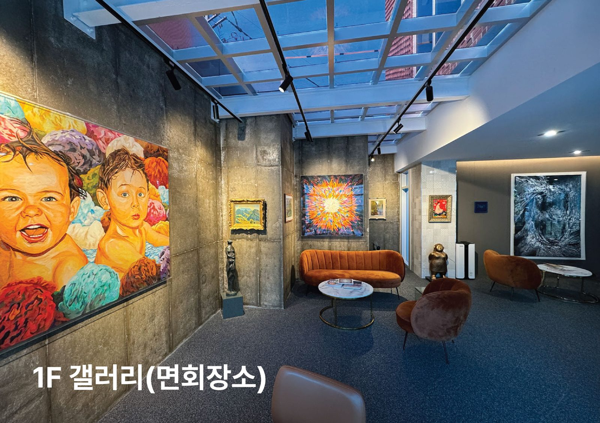
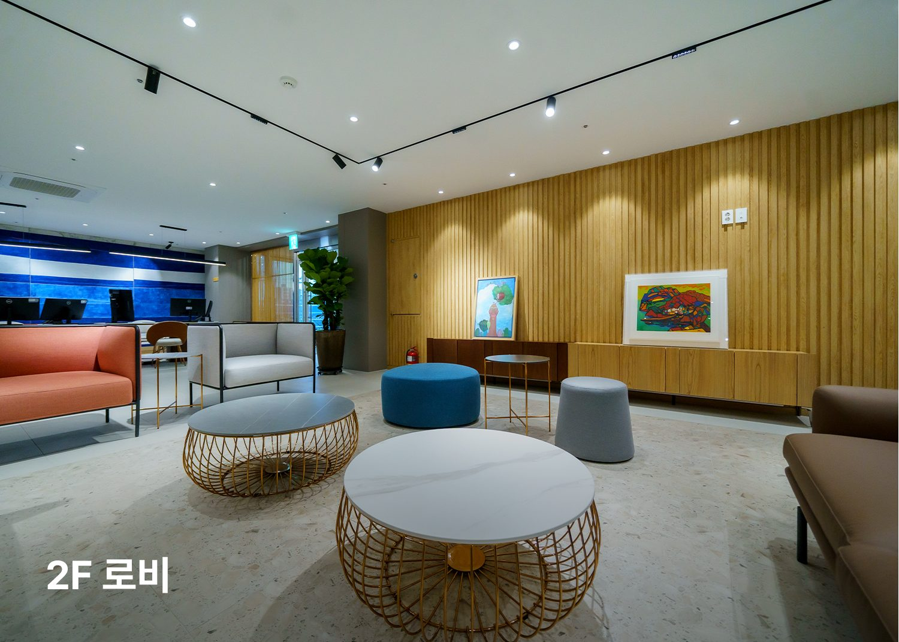

하일렌요양병원은 어디에 있고, 면회는 어디서 하나요?
하일렌요양병원은 전남광주통합특별시 서구 상무대로 1176에 있습니다. 보호자 면회는 1층 갤러리에서 하실 수 있으며, 밤늦은 시간과 새벽을 빼면 시간 제한이 없습니다.
위치 안내
도심 속 의료 중심 접근성 하일렌요양병원은 전남광주통합특별시 서구 상무대로 1176에 위치해 외래 및 통원 진료가 편리합니다. 주요 교통망과 가까워 고속터미널, 송정리역까지 차량으로 이동하기 편리합니다.
항암 및 방사선 치료를 위해 치료병원을 이용하시는 입원 환자분께는 입원 중 언제든지 이용할 수 있는 '안심 픽업 서비스 차량'을 운영하고 있습니다. 전담 직원이 이동 전 과정을 지원합니다.
외래 가는 길의 이동이나 동행은 병원에 문의해 주십시오.
보호자 방문이 가능하며, 하일렌요양병원은 도심 속에서도 안정과 회복이 공존하는 쾌적한 환경을 유지합니다.
- 주소
- 61928 전남광주통합특별시 서구 상무대로 1176
- 전화
- 062-439-1000
- 면회 장소
- 1층 갤러리
- 면회 시간
- 밤늦은 시간과 새벽을 빼면 시간 제한이 없습니다.
- 주차
- 주차하실 수 있습니다.
- 휠체어
- 휠체어로 출입하실 수 있습니다.
- 대중교통
- 가까운 지하철역은 돌고개역입니다. 돌고개역 3번 출구에서 586m입니다.
- 문의
- 원내 상담실 · 카카오톡 채널 · 062-439-1000
지도로 길 찾기
오시는 길 61928 전남광주통합특별시 서구 상무대로 1176 · 돌고개역 3번 출구에서 586m
아래 버튼을 누르면 지도 앱에서 병원 위치를 바로 볼 수 있습니다.
대표전화 062-439-1000
면회는 어디서 하나요
갤러리는 환자와 보호자가 함께 머무는 휴식 공간입니다.


입원 서류와 병실 안내는 입원 안내에서 확인하실 수 있습니다. 간병이 따로 필요 없거나 단기간의 가족 간병으로 충분한 분이 입원하십니다. 보호자 동반 여부는 입원 상담 때 함께 여쭤 보고 안내합니다. 장기간 간병이 필요하시면 일반 요양병원을 안내해 드립니다.
병원 주변
병원 맞은편에 광주시립미술관 상록전시관과 하정웅미술관이 있습니다.

자주 묻는 질문
보호자 면회는 언제, 어디서 할 수 있나요?
보호자 면회는 1층 갤러리에서 하실 수 있으며, 밤늦은 시간과 새벽을 빼면 시간 제한이 없습니다. 갤러리는 환자와 보호자가 함께 머무는 휴식 공간입니다. 감염 관리가 필요한 시기의 면회 방법은 오시기 전에 병원에 문의해 주십시오.
오시는 길과 면회가 궁금하시면 언제든 물어보세요. 입원·외래·단기입원 상담은 원내 상담실에서 안내합니다.
제공 하일렌요양병원 · 갱신 2026-10-21